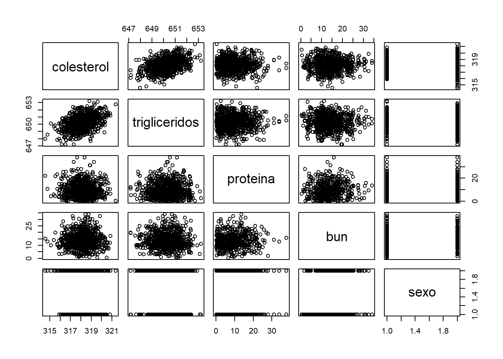
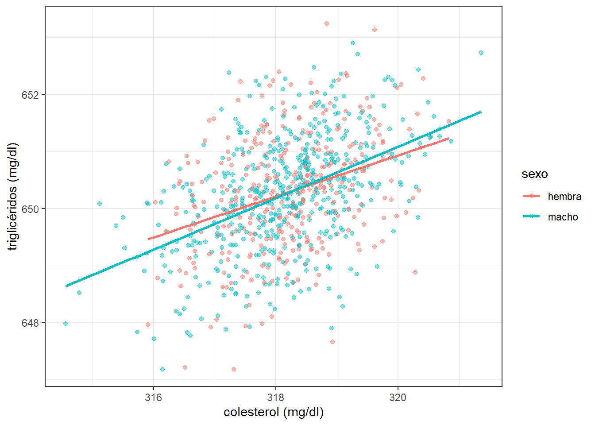
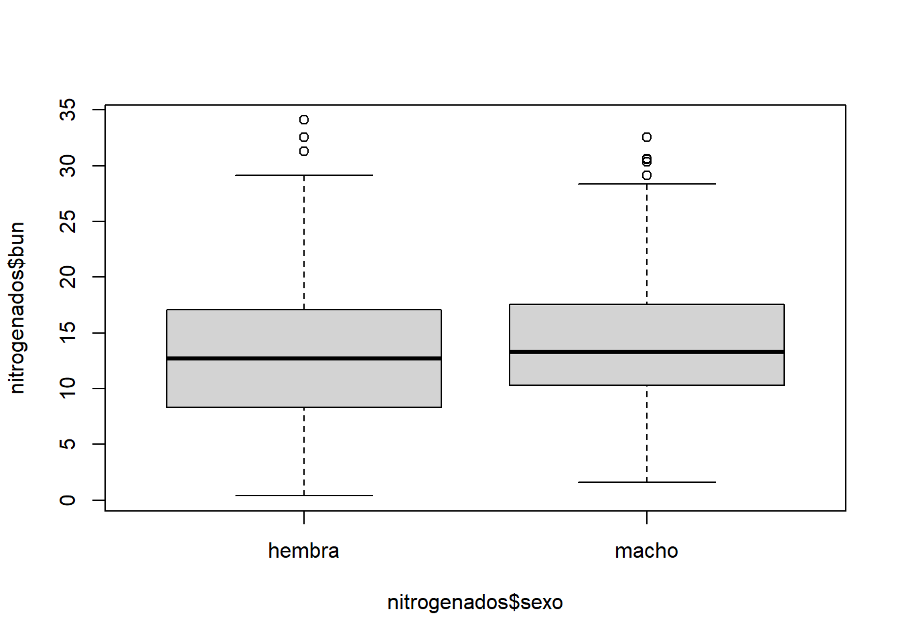
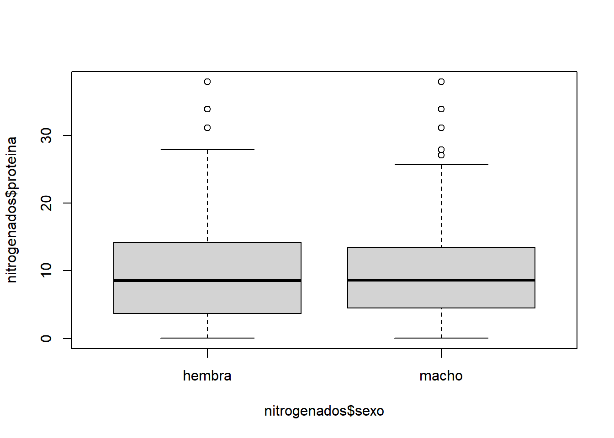

setwd("~/Curso_R/Estadistica_basica")2 Análisis de datos
2.1 Importando datos en R
Antes de ingresar nuestros datos, es muy importante indicar a R cuál será nuestro directorio de trabajo o también llamado Working Directory. Es decir, debemos establecer la carpeta dentro de la cual se encuentran los archivos a utilizar, y donde se exportarán los que generes durante tu trabajo.
R toma automáticamente un directorio en el cual trabajar. Puedes saber en que directorio estás trabajando con la función getwd().
Existen algunas formas de establecer el lugar de trabajo. La primera es de manera manual:
Nota que el símbolo ~ se encuentra al inicio del directorio escrito. Este símbolo reemplaza al resultado obtenido de la función getwd.
La segunda manera de establecer el directorio es presionando las teclas Ctrl+Shift+H. Inmediatamente se abrirá una ventana en la que podrás seleccionar tu directorio manualmente.
2.1.1 Archivos csv
Puedes descargar el achivo utilizado en este tutorial desde este link . Antes de importar este u otro archivo debes tener claro cuál es el tipo de extensión, ya que diferentes formatos implican diferentes funciones para importarlos.
Tanto los archivos txt y xlsxl resultan un poco más complicados de leer e incluso necesitan la instalación de otros paquetes como readxl. Por otro lado, los archivos csv (comma separated values) con los que trabajarás en esta clase, se pueden importar de esta manera:
data <- read.csv("osos_hema.csv")
Important
Asegúrate que el archivo osos_hema.csv se encuentra en el directorio que indicaste previamente.
Una vez que hayas importado el archivo, lo puedes ver como data frame en el panel Environment. Puedes hacer clic sobre el objeto e inspeccionarlo brevemente.
Repasa brevemente las funciones que aprendiste en Chapter 1 para obtener datos más específicos sobre el objeto data.
head(data)
summary(data)
str(data)Observa que hay una gran cantidad de datos faltantes NA’s. ¿Son estos datos faltantes un problema para calcular la media y mediana de la columna colesterol?
mean(data$colesterol)
## [1] NA
median(data$colesterol)
## [1] NALos resultados muestran que no es posible calcular estas medidas de tendencia sin haber limpiado el data frame. Para poder hacerlo, es aconsejable elegir las columnas de interés y realizar la limpieza de NA’s únicamente en éstas.
2.2 Manipulación de data frames
Ahora aprenderás a manipular los datos que serán analizados en la sección 2.3, e investigarás si existe alguna diferencia entre la media de colesterol de machos y hembras, y si la hubiera, testearás si esta disimilitud es estadísticamente significativa realizando la prueba de hipótesis estadística T de Student.
Por último, investigarás si existe correlación entre los niveles de colesterol y triglicéridos en ambos sexos. Para esto necesitas algunos paquetes.
library(tidyverse)
library(rafalib)Para deshacerte de los NA's puedes extraer las columnas de interés de una manera parecida a la que has aprendido anteriormente.
lipidos <- data[ ,c("colesterol", "trigliceridos", "sexo")]
lipidos <- na.omit(lipidos)
# También puedes buscar las filas que poseen NA’s
which(is.na(data$colesterol))📚 Tarea
¿Cómo podrías deshacerte de los NA's utilizando which(is.na())?
2.2.1 pipes
Ahora usarás una de las funciones más populares del paquete magrittr (parte de tidyverse), llamado pipe y escrito como %>%. Este operador se utiliza mucho en lenguaje de programación ya que simplifica la unión de funciones. Sin embargo, desde la versión de R 4.1.0, se introdujo el operador nativo |>. El uso de ambos depende del contexto en el cual son implementados como se discute en este artículo, y hay un gran resumen del uso de cada uno aquí.
Sea cual sea tu elección, ambos pipes se traducen a lenguaje común como “después”, y se utilizan para pasar el output de una primer función hacia una segunda, tercera, etc.
Puedes aprovechar esta función para simplificar la escritura del código para extraer ciertas columnas de data.
# Extrae las columnas de lipidos y sexo
lipidos <- data %>%
select(colesterol, trigliceridos, sexo) %>%
na.omit()
# Extrae las columnas de compuestos nitrogenados y sexo
nitrogenados <- data %>%
select(proteina, bun, sexo) %>%
na.omit()Ahora el código es más fácil de interpretar y este se lee como: toma el objeto data; después selecciona las columnas colesterol, triglicéridos y sexo; después omite los NA’s. Esto se lee de igual manera para el objeto nitrogenados.
2.3 Estadística básica en R
Puedes realizar una exploración rápida de tus datos antes de iniciar análisis específicos. Observemos en un scatterplot como se distribuyen los datos.
plot(data)
2.3.1 Correlación
Parece ser que hay algún tipo de relación entre las variables de colesterol y triglicéridos. Podemos utilizar la función cor para determinar si de hecho existe alguna correlación.
cor(lipidos$colesterol, lipidos$trigliceridos)
## [1] 0.4223668Este resultado, sin embargo, no es muy claro pero recuerda que no estamos separando estos datos basados en otra variable como edad o sexo, que podrían tener una influencia en este resultado. Además, por default cor utiliza el método de Pearson. ¿Cambiaría este resultado en base al uso de otro método?
Ejercicio
Calcula la correlación de estas variables mediante el método de Spearman.
Ahora apliquemos más funciones de dplyr junto con los pipes para calcular la correlación en base al sexo.
lipidos %>%
group_by(sexo) %>%
summarise(cor = cor(colesterol, trigliceridos))
## # A tibble: 2 × 2
## sexo cor
## <chr> <dbl>
## 1 hembra 0.340
## 2 macho 0.473También puedes utilizar ggplot2 para graficar esta posible correlación.
lipidos %>%
ggplot(aes( x = colesterol, y = trigliceridos, color = sexo)) +
geom_point(alpha = 0.5) +
geom_smooth(method = "lm", se = FALSE) +
labs( x = "colesterol (mg/dl)", y = "triglicéridos (mg/dl)") +
theme_bw()
2.3.2 Diferencias de medias
Ahora utiliza el objeto nitrogenados e inspecciona en detalle alguna diferencia entre machos y hembras.
nitrogenados %>%
select(bun, sexo) %>%
group_by(sexo) %>%
summarise(media = mean(bun),
mediana = median(bun),
desv_est = sd(bun))Estas posibles diferencias también pueden ser observadas también mediante un gráfico decaja y biggotes.
boxplot(nitrogenados$bun ~ nitrogenados$sexo)
boxplot(nitrogenados$proteina ~ nitrogenados$sexo)
La diferencia de medidas de tendencia entre sexos no es clara. Sin embargo, ¿cómo podemos saber que esta diferencia es o no estadísticamente significativa?
Aunque a fines de este ejemplo, utilizaremos el test de Student para calcular el valor p, es necesario aclarar que no profundizaremos en detalles matemáticos o discutiremos sobre que tipos de test podrían contestar esta pregunta de mejor manera. Si deseas tener más conocimiento sobre temas estadísticos, dirígete a la sección de Fuentes de este documento y descarga los libros y documentos que sean de tu interés.
Primero, debemos observar si nuestros datos siguen una distribución normal. Para esto utilizaremos funciones base de R y además la función mypar() del paquete rafalib que instalamos previamente.
mypar(1,2)
# Grafica un histograma
hist(nitrogenados$bun, main = "Distribución de valores de Urea en sangre")
# y además
qqnorm(nitrogenados$bun)
qqline(nitrogenados$bun)
Si deseas saber más sobre el significado de los Q-Q plots, ingresa aquí.
2.4 T de Student
Ahora que tienes evidencia de que los niveles de urea en sangre se aproximan a una distribución normal, puedes calcular el valor p. Primero necesitas subdividir al objeto nitrogenados.
# Crea un objeto con los machos
bun_m <- nitrogenados%>%
filter(sexo == "macho") %>%
select(bun) %>% unlist()
# Ahora uno con las hembras
bun_h <- nitrogenados %>%
filter(sexo == "hembra") %>%
select(bun) %>% unlist()
Ejercicio
¿Cómo fueron almacenados los objetos col_m y col_h?. Lee sobre unlist en la sección de Ayuda.
Puedes entonces realizar la prueba T de Student con una sola línea de comando.
t.test(bun_h, bun_m, var.equal = T)
#Si solo quieres obtener el valor de p
t.test(bun_h, bun_m, var.equal = T)$p.valueEl p-value = 0.002837017, quiere decir que hay muy baja probabilidad de que la diferencia de medias en los niveles de urea en sangre se deba a un error de muestreo o al azar. Consecuentemente, la hipótesis nula queda rechazada y aceptamos la hipótesis alternativa.
2.5 Análisis de Componentes Principales
2.6 Personalizando gráficos con ggplot2
2.7 Fuentes
Este capítulo fue tomado y adaptado de diversas fuentes, siendo R for Data Science y el curso gratis de edX Statistics and R, las más grandes influencias de este trabajo.
Tanto el análisis estadístico como la creación de gráficos utilizando ggplot2 son temas muy amplios para los cuales existen una amplia gama de recursos en internet. En cuanto a la parte estadística, he hecho una recopilación muy breve de libros que abordan estos temas, así como también sobre la investigación reproducible, su importancia, y como llevarla a cabo en R. Para acceder a estos recursos haz clic aquí.
Finalmente, puedes profundizar más en el uso de ggplot2 ingresando a: Data Visualization with R , Top 50 ggplot2 Visualizations y Data visualization with ggplot2.